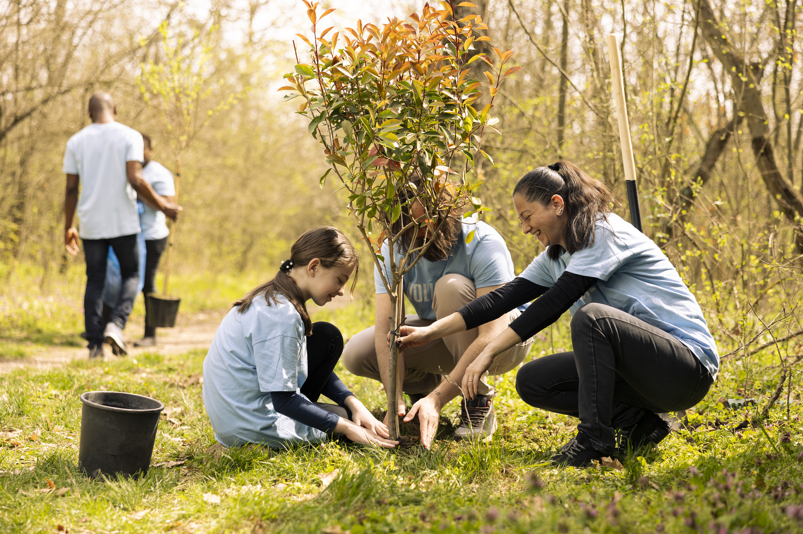
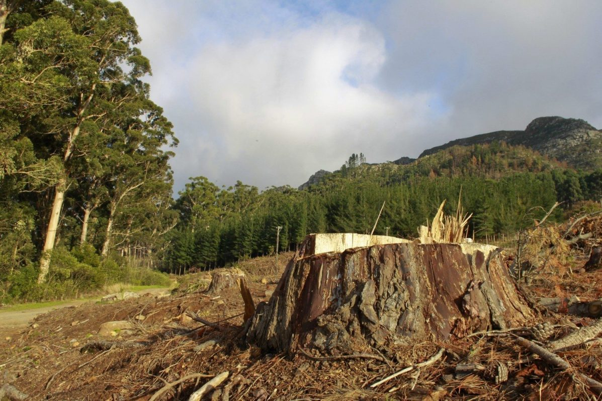
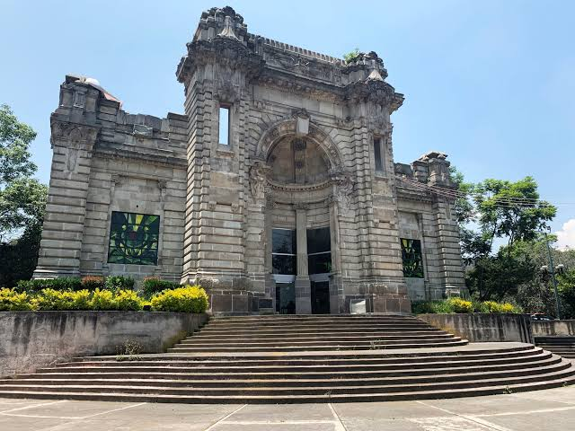

Tu reporte puede ayudar a proteger un espacio verde.
Alerta Verde es la plataforma ciudadana para identificar, documentar y dar seguimiento a afectaciones en parques, jardines y áreas verdes de tu comunidad, y para sumarte a campañas de reforestación y limpieza.
Si detectas tala irregular, basura, incendios o cualquier otra afectación, puedes reportarlo en minutos: indica la ubicación, describe lo que observaste y, si quieres, adjunta una fotografía. Tu reporte queda documentado y disponible para consultarlo después.
Tecnología ciudadana para cuidar lo verde
Alerta Verde nace como un proyecto de tecnología ciudadana pensado para frenar el deterioro de los espacios verdes urbanos. Conectamos a vecinos, familias, escuelas, organizaciones ambientales y autoridades locales en un solo lugar para reportar afectaciones, dar seguimiento a cada caso y sumar esfuerzos de recuperación.
La plataforma está diseñada para ser sencilla y accesible: cualquier persona, sin importar su nivel socioeconómico o qué tan familiarizada esté con la tecnología, puede participar en el cuidado de su entorno.
- Jóvenes, estudiantes y familias que quieren cuidar su colonia
- Vecinos y organizaciones comunitarias
- Escuelas, universidades y empresas con programas ambientales
- Autoridades locales que dan seguimiento a los reportes


Frenar el deterioro de las áreas verdes
El crecimiento urbano desordenado pone en riesgo parques, árboles y otros espacios verdes. Buscamos atender principalmente la tala o retiro irregular de árboles, las construcciones que afectan áreas verdes, el abandono de espacios públicos y la falta de información y participación ciudadana en su cuidado.
Las áreas verdes ayudan a regular la temperatura, disminuir contaminantes, favorecer la biodiversidad y mejorar la calidad de vida de la comunidad. Por eso, nuestra meta es que cada reporte se convierta en información organizada y en acciones reales de recuperación.
"Tu reporte puede ayudar a proteger un espacio verde."
Cómo funciona
-
Reporta. Indica la ubicación, la categoría y una breve descripción de lo que observaste.
-
Se documenta. Tu reporte queda registrado con un folio para que puedas darle seguimiento.
-
Se da seguimiento. El estado avanza de Enviado a Verificado, En Atención y Resuelto.
-
La comunidad participa. Consulta el mapa comunitario, da seguimiento a los reportes y súmate a campañas de recuperación.
Súmate a una campaña
Reforestación en Bosque de Tlalpan
Plantación de especies nativas en la zona norte del bosque, con brigadas de riego y cuidado inicial durante la jornada. Lleva ropa cómoda, agua y protector solar; herramientas y guantes se proporcionan en el lugar.
Ver todas las campañas →Esta tarjeta es un ejemplo de cómo se vería una campaña destacada aquí en el Inicio; la lista completa (real o de prueba) vive en la página de Campañas.
